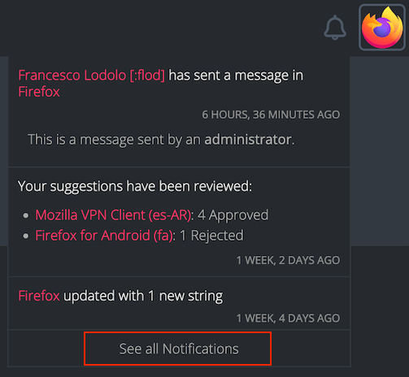

Notifications
Tracking updates across several projects can quickly become challenging. Pontoon tries to support users across different roles by sending notifications, to make sure important updates don’t get lost. Administrators can also use notifications to send messages about specific projects.
When the user receives a notification, the bell icon near the user avatar in the top right corner will show a badge with the number of unread notifications. Clicking the bell icon will display the latest notifications in a dropdown menu.

Clicking See all Notifications at the bottom will take the user to the complete list of notifications. The same list can also be accessed by opening the /notifications URL directly (e.g. pontoon.mozilla.org/notifications).
Receiving notifications via email
Pontoon also offers the option to receive notifications via email, allowing users to stay informed about important events even when they're not actively using the platform. They can choose to receive email notifications as a daily or weekly digest and customize their preferences by subscribing to specific notification types.
Receiving notifications in the browser
Pontoon notifications can be delivered directly to your browser through the Pontoon Add-on, which is compatible with both Firefox and Chrome.
Disabling notifications
Pontoon includes several types of notifications and most of them can be manually disabled by users if they don’t find them useful.
Notification types
New strings
This notification informs users when new strings are added to a project. The notification is sent to all users who contributed translations to that project, as soon as new strings are available.
Project target dates
This notification informs users when a project is incomplete and it’s approaching the target date. The notification is sent to all users who contributed translations to that project, the first time 7 days before the target date, then again 2 days before.
Comments
Pontoon distinguishes between two types of comments:
- Translation comments are associated with a specific translation. These comments are displayed under the translation itself.
- Source string comments are associated with the source string. These comments are displayed in the
COMMENTStab in the right column.
For either type of comment, a notification is sent as soon as a comment is added.
For translation comments, the recipients are:
- Authors of other translation comments associated with the same translation.
- Translation author.
- Translation reviewer.
For source strings comments, the recipients are:
- Users with the ability to review translations for the string.
- Authors of translation comments.
- Authors of source string comments.
- Translation authors.
- Translation reviewers.
New suggestions ready for review
This notification is sent once a week to inform reviewers about new suggestions needing a review. It includes information about suggestions that were submitted, unapproved or unrejected over the last 7 days. Recipients include users with permissions to review these suggestions — translator and team managers — as well as the authors of previous translations or comments in the same string.
Review actions on own suggestions
This notification is sent once a day to authors of suggestions, to inform them that their work has been reviewed.
New team contributors
This notification is sent to team managers, as soon as a new user makes the first contribution to their team.
Badge awarded
This notification is sent to a user upon being awarded with a badge or new badge level from reviewing and submitting translations, or promoting users.
Manual notifications
Administrators can send manual notifications to a project, including all locales or a subset of them. Unlike other types of notifications, this can’t be disabled.